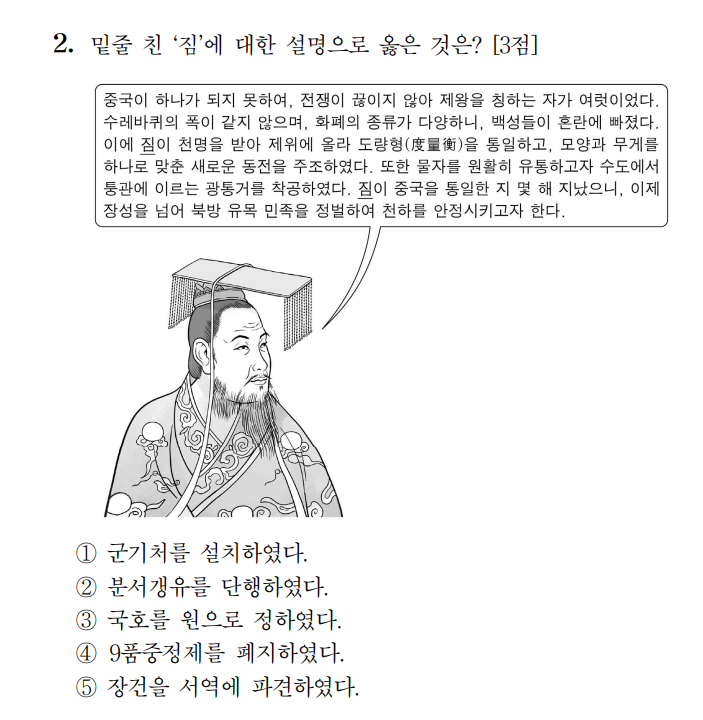

정답은 4번

정답은 4번
2번인게 악랄함 ㅋㅋ
12번만 됐어도 정답률 10퍼는 오를듯 ㅋㅋㅋ
수문제? 광통거 못봤으면 바로 진시황 찍게 생겼넹
그림 시발 ㅋㅋㅋㅋ
진시황인줄
제미나이한테 물어보니 2번이나 속네 무능한것
지피티도 속음ㅋㅋ
무료 AI버전 쓰는 애들이 무슨 AI는 못푸네 이러는데 잼민이도 다품 구독도 못하는 거지들이나 못풀지
https://share.gemini.google/kYQURv2TCbMj
당연히 ai가 내 머리보단 유능하겠지
요즘에는 농담이라고 따로 주석을 달아줘야 농담인줄 이해하는 애들이 많아져서 슬퍼
사회적 지능이 자꾸 떨어지는것도 ai의 폐해일까
제대로 알지도 못하면서 아는척하는게 꼴사나운거지 할줄아는데 못한다고 하니까.. 이해는감
ㅋㅋ인생 최대 업적임??ㅋㅋ
ai한테 자아의탁하는 병신.. 주식처물렸나
이새끼는 왜 발작이야ㅋㅋㅋㅋ
이런게 찐따 화법인가
이래서 고유명사를 연결하는 연습이 필요함
아예모르면 낚일일도없는데 바보들 ㅋ
그림이 진시황으로 유도하는 힘이 셌음 ㅋㅋ
저 문제 맞춘사람들은 진짜 수능시험의도까지 꿰뚫은거같다
제출자가 틀리라고 낸거네 까지 간파한
어..? 이게 왜 3점이지??
라는 생각을 시험중에 하는 사람들만 정답을 맞출수 있음
천하통일, 도량형 통일이라고해서 진시황 이라고 생각했는데 광통거와 장성을 넘어 북방정벌 보면서 시황제가 아니네 생각이 딱들더라
아 진시황이 아니구나 ㅋㅋㅋㅋㅋ
클로드는 정답맞추네
그림이 30프로는 먹고간듯 ㅋㅋ
심지어 마지막엔 장성을넘어 ㅋㅋㅋ
각각 말한게 다른사람인거라는거지?
아니 설명으로 대충보면 업적이 진시황같아서 다 2번 골랐는데
정답은 수문제 4번이래
어쩌면 세계사 지식수준을 떠나서
이 한국에서 사기에 당하지 않는 주의력도 공부시키게 하려는 평가원의 깊은 뜻이 아니였을까.... ㅋㅋ
아니 천하통일 도량형 통일이면 여기까지만 보면 누가봐도 진시황이잖아 ㅋㅋ
광통거는 세계사 공부 안했으면 몰랐을거고 장성 넘어 북방정벌도 뭐 진시황이면 했겠지 싶은것도 있고
생각해보니 조금 이상하긴 하네 진시황제는 오랑캐 오지말라고 만리장성을 쌓은거지 넘어가서 정벌까지 하진 않았겠네
중국에서도 이 문제로 난리라며
수 문제가 나오는 이 문제로 난리임? 엌ㅋㅋㅋ
https://www.dogdrip.net/735898526
이거였음 ㅋㅋㅋ
중국에서는 저 얼굴 그림보고 맞추는 사람들이있어서...
우리도 보기란에 세종대왕 얼굴 그림 있으면 문제가 아무리 개떡같아도 맞출수 있을듯?
짐이 중국을 통일한 지 몇 해 지났으니, 이제 장성을 넘어 북방 유목 민족을 정벌하여 천하를 안정시키고자 한다.
여기까지 봐야 안속음 ㅋㅋ
나도 진시황은 북방 정복 이런거 안한걸로 알아서
다 읽고 수양제인거 알았음 맞나?
대구빡이 딱 양씨사람이네 저거
gpt무료: 틀리
재미나이 무료: 틀림
클로드 fable 5.2 xhigh: 정답
클로드 씁시다
클로드도 중간 모델은 틀리네
세계사 선택한 사람은 역사 ㄹㅇ 좋아하는 사람일텐데
이제 역사를 혐오하게될듯
지피티 플러스도 틀림ㅋㅋㅋ
아는게 원래 없어서 틀려도 안 억울하네 ㅋㅋ
gpt 6.2 아스트라 라이트로 넣으니까 10회 독립시도했을 때 2번 틀리고 그림을 빼니까 안틀리네
제미나이하이드로젠은 설명하다가 갑자기 정정함ㅋㅋㅋ
정답: ② 분서갱유를 단행하였다.
해설
제시문 속 밑줄 친 ‘짐’은 진시황(진나라 시황제)입니다.
※ 제시문의 '광통거'는 함정 요소로 활용되기도 하나, 문맥상 수나라 문제가 아니라 진시황을 가리키는 내용입니다. 실제로는 수나라 문제가 변형되거나 오답 유도를 위해 섞인 지문일 수 있으나, 선지에서 진시황의 업적인 ②번이 명확한 정답입니다. 잠깐, 다시 정확히 보면 광통거는 수 문제(양견)의 업적입니다!
[정정 및 정확한 해설]
정답: ④ 9품중정제를 폐지하였다
제미나이도 검토하고 답 바꾸는데
읽고 한방에 풀어버리는 리트냥이
ㅋㅋㅋㅋㅋㅋㅋㅋㅋㅋㅋㅋㅋㅋㅋㅋㅋㅋㅋㅋㅋㅋㅋㅋㅋㅋㅋ
아니 씹 그림이랑 3줄 도량형까지 읽고 바로 2번이구만 뭘 했더니 4번이래서 개놀랬네
읽고 진시황 아닌건알았는데 수문제였구만
세계사에 중국 왕 개혁내용까지나오는구나
저게 과거제도입이라 의미가 크거든
나아가 비중없는 삼국지시대에
구품관인법 만들었다고 진군은 알아야댐
수 문제 어진이랑 똑같이 생기긴 했네ㅋㅋ
진시황은 지금보니 대체적으로 눈썹이 부리부리한게 사납게 생김
진시황이 아니구나 씹ㅋㅋㅋㅋ낚였네ㅋㅋㅋ
그림 보고 2줄 읽으면 낚이기 진자 좋게 만들었네